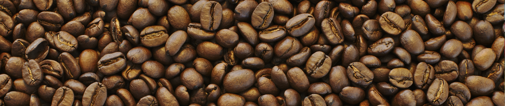

Welcome to Four Sisters Coffee Co.!
We Craft Our Coffee With Love
Four Sisters Coffee Co. focuses on great coffee and making sure your day is a little brighter and a lot more caffeinated! We are dedicated to using the best ingredients and work tirelessly on our seasonal menus!
Seriously, people travel far and wide to sample our delicious and unique speciality coffees.
You can be sure when you walk into our shop that you are getting the best: the best coffee, the best service, and the best baristas in the Erie area!
Learn more About Us here.